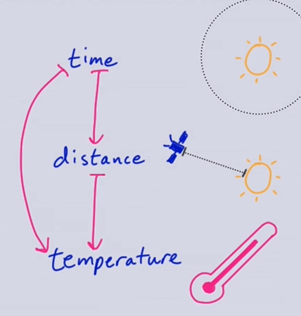
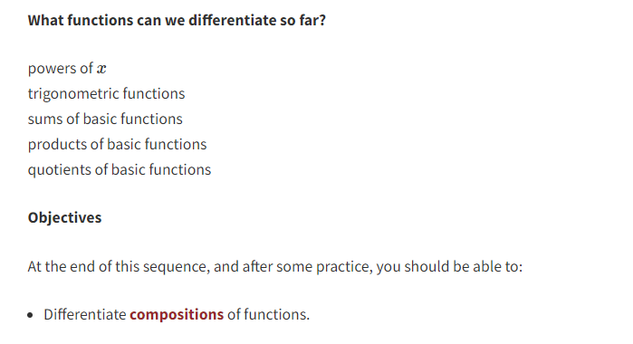
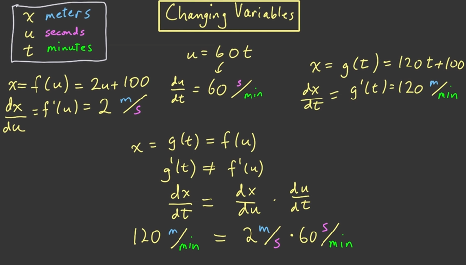
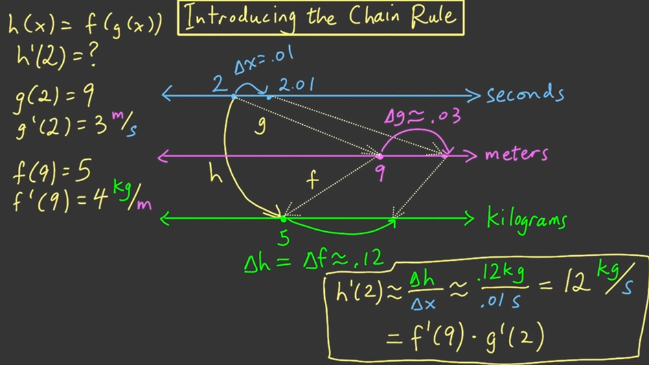
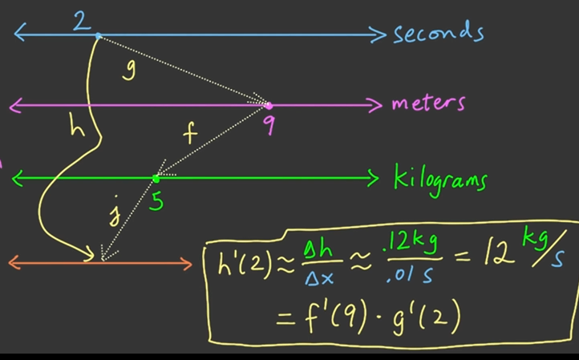
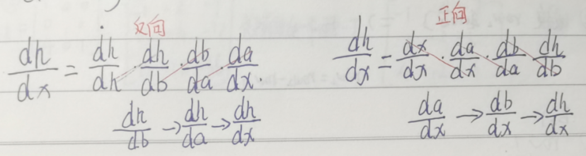

2.3Chain rule 链式法则
1. Motivation 动机
情境:我们想要发射一个卫星去观测太阳,然后随着距离的变化,温度也会变化,我们需要控制这个温度变化不能太大,不然卫星会解体,这个距离又是根据我们时间的变化变化的,所以我们需要建立一个时间对温度(中间是时间对距离)的变化率的计算.

2. The chain rule链式法则
现在我们已经掌握了幂法则,所有三角函数的导数,导数加法,减法,乘法,除法法则,在这节课的结尾我们需要掌握复合函数的导数求法.

3. Changing Units改变单位
一个单位改变的情景描述:
我们有一辆自行车,变量x描述距离单位m,变量t描述时间,单位是分钟minutes,变量u描述的是时间,单位是秒.
问题1:u和t之间的关系是什么?
解答:显然是u = 60t,1分钟=60秒,分钟需要乘以60才等于秒数
问题2:t和u都是时间,我们分别建立和x的关系,x=f(u),x=g(t),假设f(u)=2u+100,那么dx/du是多少?含义是什么?单位是什么
解答:dx/du = 2,含义是每一秒(u)移动多少米(x),m/s
问题3:根据我们用u表示的x的公式,那么用t表示的公式是什么样?导数是多少?单位是什么?
解答:根据f(u)=2u+100和u=60t,所以代入得到,x = g(t) = 120t + 100,dx/dt=120,单位是每分钟(t)移动多少米(x),所以是m/min

4. Another viewpoint另一个视角
假设我们有一个复合函数h(x)=f(g(x)),假设g(2)=9,f(9)=5,h(2)=5,其中2的单位是s,9的单位是m,5的单位是kg.我们想要求h(2).
问题1:假设g(2)=3m/s,那么如何估计g(2.01)?
解答:使用线性近似等于 ≈g(2) + g'(2)*(2.01-2)=9m+3m/s*0.01s=9.03m
问题2:假设f'(9)=4kg/m,那么估计f(g(2.01))?
解答:f(g(2.01))=f(9.03)≈f(9)+f'(9)*(9.03-9)=5kg+4kg/m*0.03m=5.12kg
问题3:求解h'(2)
解答:我们计算得到了f(g(2.01))=h(2.01)=5.12kg,已知h(2)=5kg,h'(2)≈[h(2.01)-h(2)]/(2.01-2)=(5.12kg-5kg)/(2.01s-2s)=0.12kg/0.01s=12kg/s

5. Compositions and Chaining符合函数和链
思考扩展,如果三个函数互相关联呢?
那么首先通过g'(2)得到了9,然后通过f'(9)得到了5,然后通过j'(5)得到最后的h'(2)

深度学习当中的正向传播(传播和x的关系)和反向传播(传播的是y的关系)
